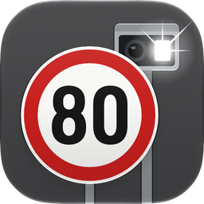

Wie viel kostet es? Die Antwort in Sekunden, mit Quelle.
Gratis, ohne Werbung, ohne Tracking, offline. Limite wählen, Tempo einstellen, Busse sehen: mit Rechenweg, Folgen für den Führerausweis und Link auf das Gesetz.
Gratuit, sans publicité, sans traçage, hors ligne. Choisis la limite, règle la vitesse et vois l'amende : avec le calcul, les conséquences pour le permis et le lien vers la loi.
Gratuito, senza pubblicità, senza tracciamento, offline. Scegli il limite, imposta la velocità e vedi la multa: con il calcolo, le conseguenze per la licenza e il link alla legge.
Free, no ads, no tracking, offline. Pick the limit, set the speed, see the fine: with the maths, the consequences for your licence and a link to the law.